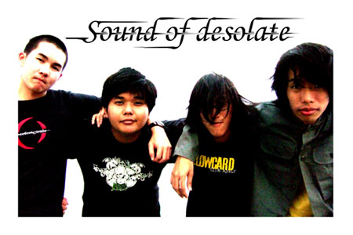

<<- back to antarai.net<<- กลับไป อันตราย.net
Sound of Desolate เป็นวง emo ก่อตั้งในปี 2005 เซ็นสัญญากับค่าย Banana Records และยัง active อยู่ ได้ปล่อยผลงานออกมา 3 ผลงาน คือ อัลบั้ม Waiting for Last Love at the Horizon / รอรักสุดท้ายที่ปลายฟ้า (2005), ซิงเกิ้ล โศกนาฏกรรมของคำว่าจบ (2018) และ ซิงเกิ้ล อย่าขอเพราะฉันให้ไม่ได้ (2025)
Sound of Desolate is an emo band formed in 2005, signed with Banana Records and is still active. They have released 3 projects so far, being, album Waiting for Last Love at the Horizon (2005),single โศกนาฏกรรมของคำว่าจบ (2018), and single อย่าขอเพราะฉันให้ไม่ได้ (2025)
วงอันเป็นที่รักของชาวอีโม AKA. เจ้าของเว็บ
a beloved band by thai emos AKA. the webmaster
